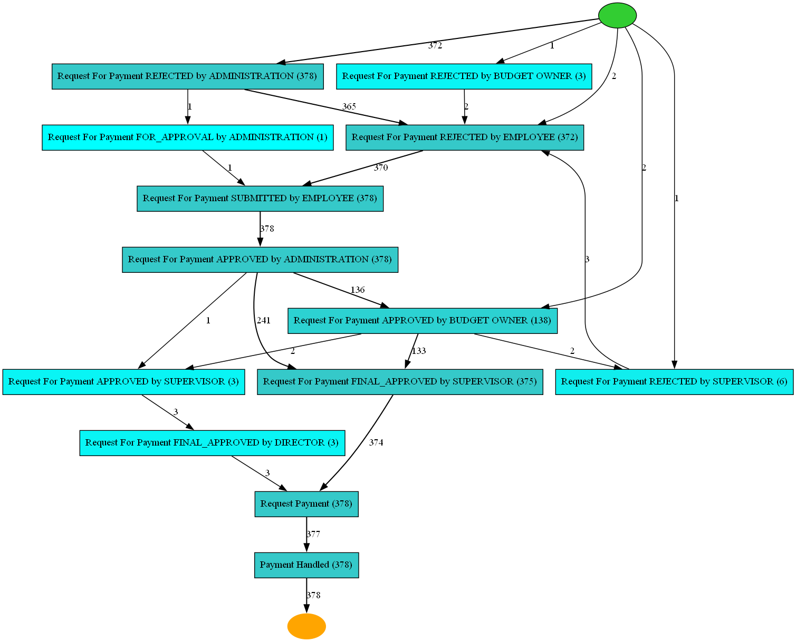
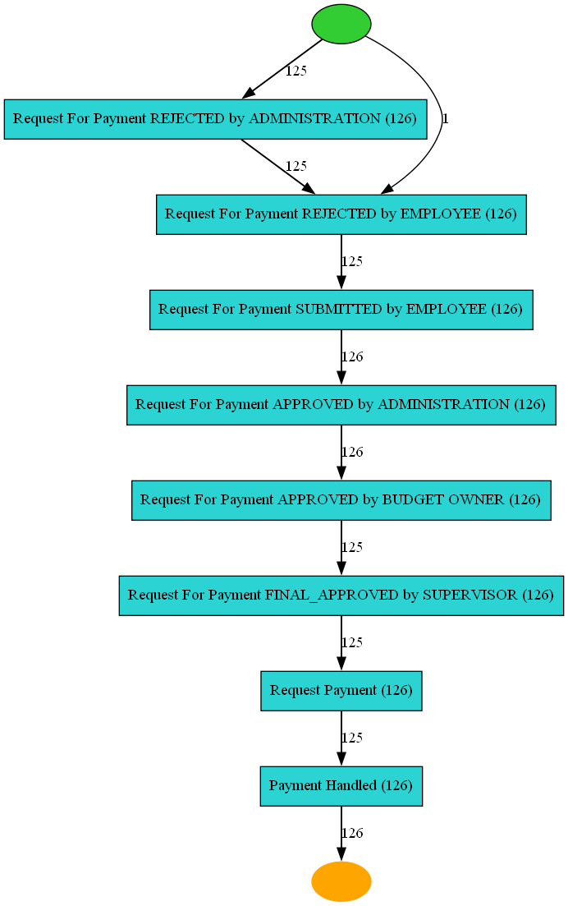
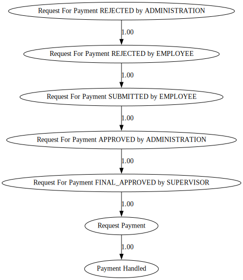

Dealing with variants example
[1]:
import sys
import os
# Get the current directory (where the notebook is located)
notebook_dir = os.getcwd()
# Get the parent directory
parent_dir = os.path.abspath(os.path.join(notebook_dir, os.pardir))
# Get two directories up
two_dirs_up = os.path.abspath(os.path.join(parent_dir, os.pardir))
# Add the project directory to the Python path
sys.path.append(two_dirs_up)
[2]:
import warnings
warnings.filterwarnings('ignore', category=RuntimeWarning)
warnings.filterwarnings('ignore', category=UserWarning)
[3]:
import sax
from sax.process_data.formatters.xes_formatter import XESFormatter
from sax.process_data.formatters.csv_formatter import CSVFormatter
from sax.utils.constants import Constants
from lingam.utils import make_dot
from sax.process_data.tabular_data import TabularEventData
import pm4py
from pm4py.algo.discovery.alpha import algorithm as alpha_miner
from pm4py.algo.discovery.inductive import algorithm as inductive_miner
from pm4py.algo.discovery.heuristics import algorithm as heuristics_miner
from pm4py.algo.discovery.dfg import algorithm as dfg_discovery
import sax.process_mining.process_mining as pm
# viz
from pm4py.visualization.petri_net import visualizer as pn_visualizer
from pm4py.visualization.process_tree import visualizer as pt_visualizer
from pm4py.visualization.heuristics_net import visualizer as hn_visualizer
from pm4py.visualization.dfg import visualizer as dfg_visualization
from pm4py.objects.conversion.log import converter as log_converter
from pm4py.objects.log.importer.xes import importer as xes_importer
# misc
from pm4py.objects.conversion.process_tree import converter as pt_converter
[4]:
fileName = "C:\Data\Automation\SAX\Papers\ICPM 2023\Possible datasets\RequestPaymentRejectedAndPayment.xes"
dataframe = pm.import_xes(fileName,timestamp_format="%Y-%m-%d %H:%M:%S.%f")
c:\Data\Automation\SAX\sax4bpm\venv\lib\site-packages\tqdm\auto.py:21: TqdmWarning: IProgress not found. Please update jupyter and ipywidgets. See https://ipywidgets.readthedocs.io/en/stable/user_install.html
from .autonotebook import tqdm as notebook_tqdm
parsing log, completed traces :: 100%|██████████| 378/378 [00:00<00:00, 2307.82it/s]
[5]:
dataframe.getData()
[5]:
| org:resource | lifecycle:transition | concept:name | org:role | time:timestamp | case:concept:name | |
|---|---|---|---|---|---|---|
| 0 | STAFF MEMBER | start | Request For Payment REJECTED by ADMINISTRATION | ADMINISTRATION | 2018-06-05 07:58:32+00:00 | request for payment 168547 |
| 1 | STAFF MEMBER | complete | Request For Payment REJECTED by ADMINISTRATION | ADMINISTRATION | 2018-06-05 07:58:32+00:00 | request for payment 168547 |
| 2 | STAFF MEMBER | start | Request For Payment REJECTED by EMPLOYEE | EMPLOYEE | 2018-06-05 08:39:52+00:00 | request for payment 168547 |
| 3 | STAFF MEMBER | complete | Request For Payment REJECTED by EMPLOYEE | EMPLOYEE | 2018-06-05 08:39:52+00:00 | request for payment 168547 |
| 4 | STAFF MEMBER | start | Request For Payment SUBMITTED by EMPLOYEE | EMPLOYEE | 2018-06-05 15:02:39+00:00 | request for payment 168547 |
| ... | ... | ... | ... | ... | ... | ... |
| 5577 | STAFF MEMBER | complete | Request For Payment FINAL_APPROVED by SUPERVISOR | SUPERVISOR | 2018-03-27 04:47:03+00:00 | request for payment 157391 |
| 5578 | SYSTEM | start | Request Payment | UNDEFINED | 2018-03-27 06:59:14+00:00 | request for payment 157391 |
| 5579 | SYSTEM | complete | Request Payment | UNDEFINED | 2018-03-27 06:59:14+00:00 | request for payment 157391 |
| 5580 | SYSTEM | start | Payment Handled | UNDEFINED | 2018-03-29 15:31:11+00:00 | request for payment 157391 |
| 5581 | SYSTEM | complete | Payment Handled | UNDEFINED | 2018-03-29 15:31:11+00:00 | request for payment 157391 |
5582 rows × 6 columns
[6]:
print('Mandatory Properties of the parsed event log: \n',dataframe.getMandatoryProperties())
print('Optional properties of the parsed event log: \n',dataframe.getOptionalProperties())
Mandatory Properties of the parsed event log:
{'case:concept:name': 'case:concept:name', 'concept:name': 'concept:name', 'time:timestamp': 'time:timestamp', 'lifecycle:transition': 'lifecycle:transition'}
Optional properties of the parsed event log:
{'org:resource': 'org:resource', 'org:role': 'org:role'}
[7]:
net = pm.discover_heuristics_net(dataframe)
pm.view_heuristics_net(net)

[8]:
activities_data = dataframe.getMandatoryPropertiesData()
[9]:
activities_data
[9]:
| lifecycle:transition | concept:name | time:timestamp | case:concept:name | |
|---|---|---|---|---|
| 0 | start | Request For Payment REJECTED by ADMINISTRATION | 2018-06-05 07:58:32+00:00 | request for payment 168547 |
| 1 | complete | Request For Payment REJECTED by ADMINISTRATION | 2018-06-05 07:58:32+00:00 | request for payment 168547 |
| 2 | start | Request For Payment REJECTED by EMPLOYEE | 2018-06-05 08:39:52+00:00 | request for payment 168547 |
| 3 | complete | Request For Payment REJECTED by EMPLOYEE | 2018-06-05 08:39:52+00:00 | request for payment 168547 |
| 4 | start | Request For Payment SUBMITTED by EMPLOYEE | 2018-06-05 15:02:39+00:00 | request for payment 168547 |
| ... | ... | ... | ... | ... |
| 5577 | complete | Request For Payment FINAL_APPROVED by SUPERVISOR | 2018-03-27 04:47:03+00:00 | request for payment 157391 |
| 5578 | start | Request Payment | 2018-03-27 06:59:14+00:00 | request for payment 157391 |
| 5579 | complete | Request Payment | 2018-03-27 06:59:14+00:00 | request for payment 157391 |
| 5580 | start | Payment Handled | 2018-03-29 15:31:11+00:00 | request for payment 157391 |
| 5581 | complete | Payment Handled | 2018-03-29 15:31:11+00:00 | request for payment 157391 |
5582 rows × 4 columns
[10]:
dataframe.getVariants()
[10]:
{'Request For Payment REJECTED by ADMINISTRATION,Request For Payment REJECTED by EMPLOYEE,Request For Payment SUBMITTED by EMPLOYEE,Request For Payment APPROVED by ADMINISTRATION,Request For Payment FINAL_APPROVED by SUPERVISOR,Request Payment,Payment Handled,': 233,
'Request For Payment REJECTED by ADMINISTRATION,Request For Payment REJECTED by EMPLOYEE,Request For Payment SUBMITTED by EMPLOYEE,Request For Payment APPROVED by ADMINISTRATION,Request For Payment APPROVED by BUDGET OWNER,Request For Payment FINAL_APPROVED by SUPERVISOR,Request Payment,Payment Handled,': 126,
'Request For Payment REJECTED by EMPLOYEE,Request For Payment REJECTED by ADMINISTRATION,Request For Payment FOR_APPROVAL by ADMINISTRATION,Request For Payment SUBMITTED by EMPLOYEE,Request For Payment APPROVED by ADMINISTRATION,Request For Payment APPROVED by BUDGET OWNER,Request For Payment FINAL_APPROVED by SUPERVISOR,Request Payment,Payment Handled,': 1,
'Request For Payment REJECTED by ADMINISTRATION,Request For Payment SUBMITTED by EMPLOYEE,Request For Payment APPROVED by ADMINISTRATION,Request For Payment FINAL_APPROVED by SUPERVISOR,Request Payment,Payment Handled,': 4,
'Request For Payment REJECTED by ADMINISTRATION,Request For Payment REJECTED by BUDGET OWNER,Request For Payment REJECTED by EMPLOYEE,Request For Payment SUBMITTED by EMPLOYEE,Request For Payment APPROVED by ADMINISTRATION,Request For Payment APPROVED by BUDGET OWNER,Request For Payment FINAL_APPROVED by SUPERVISOR,Request Payment,Payment Handled,': 2,
'Request For Payment REJECTED by ADMINISTRATION,Request For Payment SUBMITTED by EMPLOYEE,Request For Payment APPROVED by ADMINISTRATION,Request For Payment APPROVED by BUDGET OWNER,Request For Payment FINAL_APPROVED by SUPERVISOR,Request Payment,Payment Handled,': 2,
'Request For Payment APPROVED by BUDGET OWNER,Request For Payment REJECTED by SUPERVISOR,Request For Payment REJECTED by ADMINISTRATION,Request For Payment REJECTED by EMPLOYEE,Request For Payment SUBMITTED by EMPLOYEE,Request For Payment APPROVED by ADMINISTRATION,Request For Payment FINAL_APPROVED by SUPERVISOR,Request Payment,Payment Handled,': 5,
'Request For Payment REJECTED by SUPERVISOR,Request For Payment REJECTED by ADMINISTRATION,Request For Payment REJECTED by EMPLOYEE,Request For Payment SUBMITTED by EMPLOYEE,Request For Payment APPROVED by ADMINISTRATION,Request For Payment FINAL_APPROVED by SUPERVISOR,Request Payment,Payment Handled,': 1,
'Request For Payment REJECTED by ADMINISTRATION,Request For Payment REJECTED by BUDGET OWNER,Request For Payment REJECTED by EMPLOYEE,Request For Payment SUBMITTED by EMPLOYEE,Request For Payment APPROVED by ADMINISTRATION,Request For Payment FINAL_APPROVED by SUPERVISOR,Request Payment,Payment Handled,': 1,
'Request For Payment REJECTED by ADMINISTRATION,Request For Payment REJECTED by EMPLOYEE,Request For Payment SUBMITTED by EMPLOYEE,Request For Payment APPROVED by ADMINISTRATION,Request For Payment APPROVED by BUDGET OWNER,Request For Payment APPROVED by SUPERVISOR,Request For Payment FINAL_APPROVED by DIRECTOR,Request Payment,Payment Handled,': 2,
'Request For Payment REJECTED by ADMINISTRATION,Request For Payment REJECTED by EMPLOYEE,Request For Payment SUBMITTED by EMPLOYEE,Request For Payment APPROVED by ADMINISTRATION,Request For Payment APPROVED by SUPERVISOR,Request For Payment FINAL_APPROVED by DIRECTOR,Request Payment,Payment Handled,': 1}
[11]:
variant = dataframe.getVariant('Request For Payment REJECTED by ADMINISTRATION,Request For Payment REJECTED by EMPLOYEE,Request For Payment SUBMITTED by EMPLOYEE,Request For Payment APPROVED by ADMINISTRATION,Request For Payment APPROVED by BUDGET OWNER,Request For Payment FINAL_APPROVED by SUPERVISOR,Request Payment,Payment Handled,')
variant.getData()
[11]:
| org:resource | lifecycle:transition | concept:name | org:role | time:timestamp | case:concept:name | |
|---|---|---|---|---|---|---|
| 14 | STAFF MEMBER | start | Request For Payment REJECTED by ADMINISTRATION | ADMINISTRATION | 2018-12-09 11:02:25+00:00 | request for payment 177678 |
| 15 | STAFF MEMBER | complete | Request For Payment REJECTED by ADMINISTRATION | ADMINISTRATION | 2018-12-09 11:02:25+00:00 | request for payment 177678 |
| 16 | STAFF MEMBER | start | Request For Payment REJECTED by EMPLOYEE | EMPLOYEE | 2018-12-10 15:14:41+00:00 | request for payment 177678 |
| 17 | STAFF MEMBER | complete | Request For Payment REJECTED by EMPLOYEE | EMPLOYEE | 2018-12-10 15:14:41+00:00 | request for payment 177678 |
| 18 | STAFF MEMBER | start | Request For Payment SUBMITTED by EMPLOYEE | EMPLOYEE | 2018-12-12 10:16:29+00:00 | request for payment 177678 |
| ... | ... | ... | ... | ... | ... | ... |
| 5577 | STAFF MEMBER | complete | Request For Payment FINAL_APPROVED by SUPERVISOR | SUPERVISOR | 2018-03-27 04:47:03+00:00 | request for payment 157391 |
| 5578 | SYSTEM | start | Request Payment | UNDEFINED | 2018-03-27 06:59:14+00:00 | request for payment 157391 |
| 5579 | SYSTEM | complete | Request Payment | UNDEFINED | 2018-03-27 06:59:14+00:00 | request for payment 157391 |
| 5580 | SYSTEM | start | Payment Handled | UNDEFINED | 2018-03-29 15:31:11+00:00 | request for payment 157391 |
| 5581 | SYSTEM | complete | Payment Handled | UNDEFINED | 2018-03-29 15:31:11+00:00 | request for payment 157391 |
2016 rows × 6 columns
[12]:
from sax.utils.constants import LifecycleTypes
net = pm.discover_heuristics_net(variant,[LifecycleTypes.COMPLETE.value])
pm.view_heuristics_net(net)

[13]:
import sax.causal_process_discovery.causal_discovery as cd
result = cd.discover_causal_dependencies(variant)
cd.view_causal_dependencies(result)
[13]:
